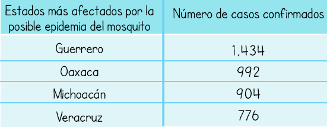

El mosquito Chikungunya o también Chikunguña pertenece a la familia de los mosquitos Aedes. Es llamado así porque es el mosquito que produce la artritis epidémica chikunguña o fiebre de chikunguña, una enfermedad que se transmite de forma similar al dengue. En los últimos meses se ha convertido en una epidemia latente en algunos países de Latinoamérica como Brasil y ha llegado a México para extenderse poco a poco por todo el país.
La fiebre de chikunguña se presenta con una fase febril aguda que dura de 2 a 5 días, seguida de un período de dolores en las articulaciones de las extremidades; este dolor puede persistir semanas, meses o años.
Las personas recién nacidas, los mayores de 65 años y las personas con presión sanguínea alta, diabetes, o problemas coronarios son los más propensos a tener la enfermedad en caso de picadura del mosquito.
En estos momentos no existe ningún tratamiento específico para evitar la enfermedad por lo que se recomienda acudir lo antes posible al médico.
Según datos del Centro Nacional de Programas Preventivos y Control de Enfermedades -Cenaprece-, la Secretaría de Salud de México ha utilizado insecticidas que no tuvieron ningún resultado efectivo contra el mosquito ni del dengue ni del chikungunya. Tras un exhaustivo análisis se encontró que el mosquito es resistente a los piretroides, por lo que comenzaron a usar organofosforados y carbamatos, compuestos que tuvieron mayor efectividad en los estados de Guerrero, Chiapas, Michoacán y Yucatán, lugares donde existía una mayor presencia de casos de la enfermedad.
Desde 1952 hasta hoy, se reportaron casos a causa del mosquito Chikungunya, que lleva una larga trayectoria de casos por todo el planeta. Sólo en América Latina, el Caribe y Estados Unidos, ya ha causado 1.379.788 de casos desde que apareciera en el año 2013 el primer caso de Chikungunya en esta región.